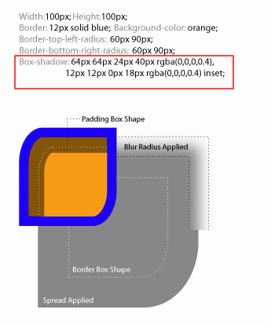
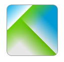
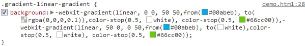
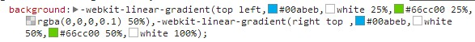

Box-shadow？这才不是你想象中的box-shadow...
box-shadow是在css3之后崛起的属性之一，也许我们对box-shadow的印象停留在下面这样：
但是box-shadow并不止能做这些，在一定意义上说这个属性有很大的潜力，可以完成很多诸如纹理背景，渐变叠加的效果。我们随着这篇文章来挖掘一下box-shadow可以做出什么。
用box-shadow实现分层渐变

这里主要利用了多层阴影做出了一个分层渐变的效果。css3中box-shadow可以有多层阴影，使用多层则可以做出许多和目标物体相同形状而不同颜色大小的结构。
用box-shadow实现漩涡状效果

Box-shadow里有关于渐变的属性，如上图所示如果加上了圆心渐变的属性，就可以做出好看的圆心渐变漩涡效果。

纹理背景

与上面那个同理，只是这个使用的是线性渐变，而这里拓展出去便可以使用这个属性实现纹理背景。
多层阴影渐变



利用1+3，渐变叠加加上多层阴影，就可以做成上图这样的图案，而发挥想象力，基于这应该能做更多有趣的图形。
而这个还有一个不同的写法，读者可以对比一下这两种方法。